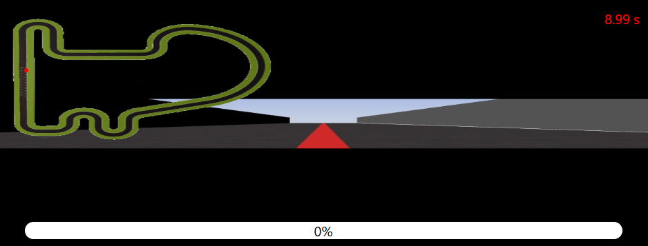

Durante este primer día se han llevado a cabo tareas fundamentales para implementar el control reactivo PID. Se importaron las librerías necesarias, se configuraron los parámetros y se realizó la captura y procesamiento de la imagen para detectar la línea.

La imagen se transformó a HSV, se aplicó una máscara para detectar la línea y se calcularon el centroide y el error, lo que permitió ajustar la dirección y velocidad mediante un controlador PD.


Finalmente, se mostró la imagen procesada en tiempo real con indicadores gráficos, evaluando el desempeño del sistema.